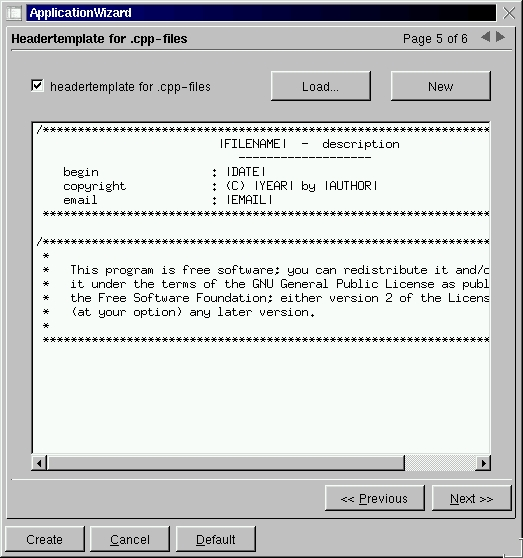

The Absolute Beginner's Guide to Kdevelop
Petr Sorfa
SCO
February 2000
The Why
This tutorial is a gentle step by step guide for absolute beginners on
how to create their first graphical application using Kdevelop. Although
aimed at all users of Kdevelop, the tutorial does have a note or two for
UnixWare users
The What
The goal of the tutorial is to create a simple application that displays
"Hello World" with a button that quits the application
[ Fig 1: Graphic of Final Application]
The How
Start up Kdevelop
-
If installed correctly, a simple typing of Kdevelop at the prompt will
do the trick. However, it is VERY IMPORTANT that the user environment
variable PATH has /usr/local/bin and /usr/local/kde/bin set as its first
paths to search
-
Note that when run for the first time some Kdevelop preferences are set
and may require some user interaction
[ Fig 2: Graphic of splash screen]
Create A New Project
-
When Kdevelop is run for the first time a prompt is displayed to create
a new project. For subsequent runs a project can be created by selecting
Project->New from the menu bar. The dialog in Fig 3 is displayed. Since
we are creating a very simple application, select "KDE->Mini" and press
"Next >>".
[Fig 3: Project New Application]
-
Now the fill in the general information (Fig 4). Name the project FirstHello.
Deselect all the toggles, except "generate sources and headers" and press
"Next >>".
[ Fig 4: Project Generate Settings]
-
Ignore the version control step (Fig 5) as this is intended for production
and large projects and press "Next >>"
[ Fig 5: Project Version Control]
-
The next two steps (Fig 6 and Fig 7) can also be skipped. They allow users
to specify what information and licensing agreements are to be put into
the beginning of generated header and code files. So press "Next >>" twice
to proceed to the last step of creating a new project
[ Fig 6: Project Header Template]
[ Fig 7: Project Code Template]

-
The last step of creating a new project is to generate the skeletal structure
for your application (Fig 8) including source code, configuration and make
files. To create the project press "Create". If any errors occur during
this creation phase, take note of them and try figure out what might be
the problem. If the error "configure: error: Qt-1.4 (libraries) not
found. Please check your installation! " is displayed do not worry
as this will be tackled in the very next step
[ Fig 8: Project Creation]
Configuring the Project
-
This step is only necessary if the error message "configure: error:
Qt-1.4 (libraries) not found. Please check your installation! " was
displayed during the project creation. Otherwise proceed to "A
Quick Overview"
-
This error occurs due to the existence of both the X11R5 and X11R6.1 graphic
installations. To correct the problem start up an xterm window and proceed
with the following steps:
-
change to the directory where the project has been created, something like
"cd /home/user/firsthello". Note that the directory has been renamed
to the lowercase version of the project name
-
Edit the file "configure" with your favorite UNIX editor, such as
"vi configure"
-
Now remove all the lines that contain any reference to X11R5 and save the
file
-
Go back to Kdevelop and select Build->Configure. A dialog (Fig 9) is shown.
Enter "i586-sco-svr4" and press "OK"
[ Fig 9: Configure Arguments]
-
If the configuration did not go smoothly this time, help is needed beyond
the scope of this tutorial!
A Quick Overview
-
Kdevelop is made up of various components
-
Class and source file browsers
-
A context sensitive editor
-
A status window reporting messages and errors
-
A dialog editor (more on that later)
-
An integrated debugger (currently utilizes gdb to do the work)
-
Tools such as an icon editor (Kiconedit) and a painting tool (Kpaint)
[ Fig 10: First Look]
Creating the Dialog Components
-
Now to create the visual contents of the program
-
Click on
or select the menu item View->Dialog Editor to start the dialog editor
-
Click with the right mouse button on the FirstHello in the Dialogs Tab
and select New Dialog
-
The New Dialog dialog will appear. Select "Qt/KDE Dialog (*.kdevdlg)" and
name the dialog widgetMain.kdevdlg (Fig 11). Press Ok to create the dialog
[ Fig 11: Creating the Main Widget]
-
The new dialog is now ready for creation. The dialog editor should look
like (Fig 12)
[ Fig 12: New Dialog Editor]
-
Now click the Widgets Tab to display the available widgets that can be
used to create the dialog (Fig 13)
[ Fig 13: Widgets Tab]
-
Click the label widget
 to add a label widget to your dialog
to add a label widget to your dialog
-
Select the label in the Widget Editor (Fig 14)
[ Fig 14: Select Widget Label]
-
In the Widget Properties select General->Text and type in "Hello World"
replacing the default label name "label" (Fig 15). Note that the name of
this label widget is "QLabel_1"
[ Fig 15: Type Hello World]
-
Click on Appearance->Font in the Widget Properties. The Font Dialog pops
up (Fig 16) and select a large size (48 or larger) and a bold weight and
press "Ok".
[ Fig 16: Font Dialog]
-
Resize and move the Label widget to in the widget editor to be roughly
in the center of the editor with all the text visible (Fig 17)
[ Fig 18: Resized Moved Label Widget]
-
Now create a button widget by clicking on
in the Widget Tab
-
Move the button in the widget editor to just below the "Hello World" label
-
In the Widget Properties select General->Text and enter "Quit". The button
should now display Quit
-
Note that the name of button widget is "QButton_1"
-
Click on Appearance->Font in the Widget Properties and in the Font dialog
select a bold weight and a size of 14
-
The Widget Editor should now look like (Fig 19)
[ Fig 19: Label and Button]
-
Although the widgets have been created, no source has been created as yet.
Press Build->Generate Sources or .
The Generate Dialog pops up
-
Select QWidget in the Dialog Class, as we are creating a widget (the main
application widget has already automatically been created for us by Kdevelop)
-
Still in the Generate Dialog, enter "widgetMain" in for the class name.
The names for the header, C++ and data files should automatically be renamed
as well (Fig 20)
[ Fig 20: Generate Dialog]
-
Press Ok to generate the source code for the widget
-
The graphical contents of the application have now been created!
Putting it all together
-
Exit the dialog editor by pressing
-
Click the LFV Tab and expand the tree to see all the files that now form
part of the application
-
Press ,
F8 or Build->Make to build the application
-
If no errors occurr, the application has been successfully created. If
errors have occurred get help!
-
Press ,
F9 or Build->Execute to run the application (Fig 21)
[ Fig 21: First Execution of Application]
-
Hold on! Where are the Quit Button and and Hello World Label widgets? We
still need to hook their code to the actual application
-
Click CV Tab and click with the right mouse button on the FirstHello class
and select "Add member function"
-
The Add class member dialog pops up. Now enter "void" for the Type
of the class member. This is the return type of the function
-
For the declaration, type "addWidgets (KApplication *a)" and press
Ok. This generates the code for the addWidgets function of the FirstHello
class
-
The edit window now displays the newly created member function FirstHello::addWidget
(KApplication *a)
-
Add "#include <widgetmain.h>" for the definition of widgetMain, our
generated widget class
-
Add the following code so that the contents now look like:
#include "firsthello.h"
#include "widgetmain.h"
FirstHello::FirstHello(QWidget *parent, const char *name) : QWidget(parent,
name)
{
}
FirstHello::~FirstHello()
{
}
/** */
void FirstHello::addWidgets (KApplication *a){
widgetMain *new_widgets = new widgetMain (this,
"Widgets");
new_widgets->setupQuit (a);
}
-
Basically the code creates the widgetMain class which sets up the label
and button widgets and calls, the yet to be created widgetMain member function,
setupQuit
-
Now in the CV Tab right click on widgetMain and select "Add member function"
-
In the Add class member Dialog, enter "void" for Type and "setupQuit
(KApplication *a)" for the declaration
-
Press Ok to generate the code for the setupQuit member function
-
Now add a line of code to the setupQuit function so that is looks like:
void widgetMain::setupQuit (KApplication *a){
QObject::connect(QPushButton_1, SIGNAL(clicked()),
a, SLOT(quit()) );
}
-
The QObject::connect function sets up that a signal is sent from the quit
button (QPushButton_1) when it is clicked to the application's quit ()
function. This ensures that when the Quit button is pressed the application
exits gracefully
-
Now click LFV Tab and under FirstHello->Sources click on main.cpp
-
Add the following two lines to main, so that the main function now looks
like:
int main(int argc, char *argv[])
{
KApplication a(argc, argv, "firsthello");
FirstHello *firsthello = new FirstHello();
a.setMainWidget(firsthello);
firsthello->resize(400,300); // New line 1
firsthello->addWidgets(&a); // New line 2
firsthello->show();
return a.exec();
}
-
The first line of code resizes the FirstHello widget to be the same size
as the area used by the button and label widgets
-
The second line of code adds the button and label widgets to the FirstHello
widget which forms the graphical base of the application
-
Now press
-
The compilation should fail with errors reported in the file widgetmain.h
-
In the messages window click on the line:
"widgetmain.h:39: 'KApplication' was not declared in this scope"
-
The editor will now display the file that is causing the problem
-
The problem is that KApplication is not defined. To solve this, add a new
include line "#include <kapp.h>" to widgetmain.h
-
Note that nothing should be typed between the comments:
//Generated area. DO NOT EDIT!!!(begin)
.. code ..
//Generated area. DO NOT EDIT!!!(end)
-
As this area is likely to be automatically updated by Kdevelop and may
destroy anything typed or changed between them
-
Now Select
to build without errors. If errors do occur they must be solved to continue
with the tutorial
-
Once successfully made, press
to execute the application (Fig 22)
[ Fig 22: The Final Application]
A Little Bit of Art
-
As a quick extra, add a bit of art to the application, select Tools->IconEdit
to invoke the icon editor
-
Create a new icon of 32x32 pixels (Fig 23) and save it in the firsthello/firsthello/
directory as artpic.xpm
[ Fig 23: Icon Editor]
-
Now press
to get to the dialog editor
-
In the Widget Editor select the "Hello World" label widget and in the Widget
Properties select Appearance->BgPixmap and set the background pixmap to
artpic.xpm. The background of the label widget should now update to a matrix
of the icon image
-
Now press
to update/generate the widget code
-
Select
and then
to to make and execute the application (Fig 24)
[ Fig 24: Arty Application]
The Biz
This tutorial has only touched the tip of the Kdevelop mountain. Kdevelop
also supports source version control, integrated debugging, in-depth customization,
packaging, source distribution, documentation and much much more. So there
is a lot more fun to be had by all users of Kdevelop